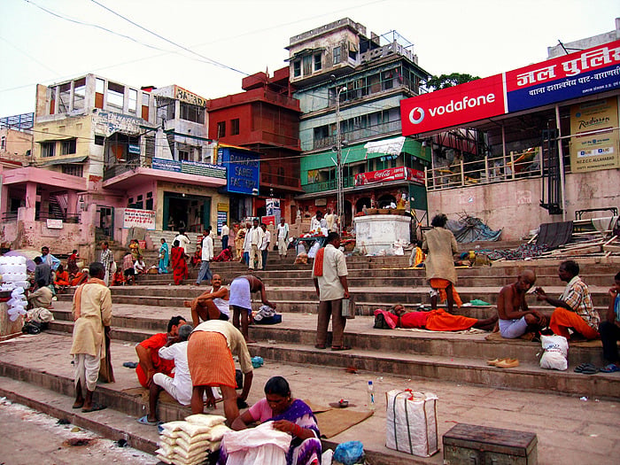

중국

인도
이집트
중국

인도
이집트
인도 좋다고 다녀온 사람도
이집트는 썅욕 박더라
이집트 일주일 다녀왔는데 인도는 가기싫던데.. 기는 조온나게 빨림 ㄹㅇ
햐.. 글쓴이 중국 안가본 새끼인건 알겠네
어지간한 유럽보다 여행 하기 좋은곳이 중국인데
어떻게 비벼도 인도 이집트랑 비교 하냐
선전이나, 베이징을 비롯한 대도시 한번 가봐라
도시스케일은 서울 개씹어 먹고 치안도 한국 일본이랑
차이 거의 없다.
자연 구경 하나만 봐도 세계 탑 5위권은 든다고 보는데
시야 엄청 좁구나 좁아
(시진핑 호로 잡놈의 씹새끼)
밑에 댓글이랑 극과극이네ㅋㅋ
이 체리파이는 죽음으로 맛있는데

진핑이는 10새기지 ㅋㅋㅋ
중국 30일 인도 30일 둘다 여행해봤는데 중국이 더 최악이라 말하고싶음.
1. 중국 현지 음식이 진짜 존나게 안맞는다 거의 70%이상이 맛이없음
2. 중국에서 3번이나 강도 비슷한거 당해서 돈 뜯겼다.
3. 영어를 하는사람이 거의없어서 너무힘들다 ( 물론 10년도 더 전이라 그럴수있음)
4. 구글지도 ,카카오 안됨 개빡친다
5. 어디 관광지를 가던 사람이 너무많아서 관람하는시간보다 기다리는시간이 더 많이 걸림
도대체 어디를 갔길래 강도를 당하냐?
강도당하면 대사관에서 공지 올릴 정도인데
어디 갔었는데? 언제적 얘기야?
요즘 강도짓하면 바로 잡혀감 진짜로 사방에서 카메라로 찍고 있음 대도시 중소형도시까지도 장난 아님 시골산골짜기 들어가는거 아닌이상 강도는 안당할텐데
음식 입에 안맞는건 어쩔수 없는거고
1번 음식이 안 맞으면 어떤 나라도 점수 나락...
중국여행 안 가봤으면 이런 똥글을 싸지말던가 중국은 그 쪼그려싸는 변기만 빼면 여행하기 매우 편한 나라임
이집트가 중국이 아니라 인도쪽으로 묶이는 수준이구나;;
언젠가는 한번 피라미드 꼭 보고싶다 생각했는데 뭔가 무서워지네
동물과 문명인을 비교하냐
이집트 돌 던진데 화이바 필수
유투브를 두루 섭렵한 나에겐 이집트가 꽤 빡세보였음
중국 최대단점은 중국어 못하면 여행이 힘들다는건데 그외에는 인도 이집트 비비는게 실례아닌가
중국을 저기에 왜 넣지 ....... 인도랑 이집트는 여행 유튜버들로 대리만족 하는데 꼭 사기당하는거 한번은 나오더라
유튭으로 보니까 하나같이 이집트는 오지말라더라
중국은 여행하기 편한편임..
요즘 번역기능도 좋은데
인도는 최악이 맞고...중국은 전에 한 번 여행 간 적 있었는데 나쁘지 않았음. 근데 음식 기름진 게 많은 건 사실이긴 함.
중국이 여행으론 좋은 나라 아님? 물론 대도시 기준이지만
시진핑 개새끼
중국가봤는데 2005년도쯤인거같은데
그때 초등학생이였는데
청두로 갔을꺼임 가족중에 한명이 살았어서
어떤장소의 화장실 갔는데 사람들 똥싸고 있는걸 다 볼수있도록 문이 반만 있었던거 같았고
근데 가서 맥도날드,피자,등등 중국전통요리 같은거 먹었는데 입맛에 안맞고 그런건 없었던거 같았고
관광지 같은곳이 애초에 청두에는 없었는지 관광지 간기억이 없네
중국은 가봤는데 천안문 앞에서
갑자기 팬티 내리고 오줌을 싸는 여자아이를 본거 말고는 크게 충격받은 여행이 아니어서 괜찮았음
중국은 그정도 급이 아니야
중국은 고덕지도 위챗 알리페이 귀찮음만 감수하면 다닐만함 동남아와 일본 중간의 위생, 물가인데 땅이커서 관광지가 엄청많음
이집트는 관광지외에 볼 것도 할 것도 없어서 똥파리 소굴에 들어가는 건 어쩔 수 없음. 그래서 알렉산드리아만 가도 개같은 번잡함과 비루함이 반은 줄어듬.
인도 중국은 도시바이도시라 그렇다쳐도 이집트는 답이없다
중국혐오에 찌들어 있어서 중국도 인도 이집트급임줄 아나본데 인도 이집트는 지옥이야 ㅅㅂ
인도는 그냥 생지옥이고 이집트는 인류애가 사라짐
중국은 그래도 친절하고 인프라 빵빵해 단지 공중도덕이 수준미달이라는게 흠이지 나한테 직접적인 피해는 없다
중국은 저기 낄 급이 아님
세군대 다 안가봐서 경험상 말은 못하고.. 매체나 커뮤로 접한 경험으로 따지면 인도냐 이집트냐인데..
중국이 정치체제가 달라서 그런거지
동아시아 국가들하고 저 미개 짐승들하고는
크나큰 차이가 있다
중국은 괜찮어
그냥 딱하나만 봐도 게임끝임
중국공안은 처음보면 좀 무서움ㅇㅇ 애새끼들 얼굴에 감정이없음 그리고 일본,한국인보면 은근히 퉁명스럽고 그럼, 한 5번가면 한번은 검문걸리고 지하철, 가차 탈때 귀찮은거 빼면 그냥 저냥인데
인도 경찰 애자새끼들은 어디 역앞에서 외국인 서성이면 여기 위험하다고 에스코트 해준다고 하거나 택시타고 가다 갑자기 말도 안되는 억지부리면서 잡고 돈줄때까지 안놔줌ㅋㅋ 개새끼들
안가